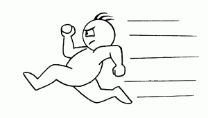

vamo, vamo, vamo…
Ex-sedentário
Equipes sensacionais!!!!! Blog do João Gabbardo dos Reis
87 years
by Claudião
in Ex-sedentário
Eu já estava cuidando de arregimentar e inscrever o time de 8 atletas para formar a Equipe “Ex-sedentário” para a 18ª Maratona Pão de Açúcar de Revezemento, que acontecerá dia 19 de setembro próximo. Agora o faço com um gostinho ainda melhor.
Trata-se de uma festa supimpa que acaba sendo, para muitos futuros ex-sedentários, a porta de entrada para o maravilhoso mundo das corridas de rua. Sem falar na renovação de ânimo para quem vive tendo recaídas, não é mesmo Claudio Dundes? Não reparem. É que vivo tendo de dar bronca em mim mesmo.
Nossa equipe, como todas as que participarão, é especial. Mas acabo de tomar conhecimento de que existem algumas equipes que são simplesmente sensacionais e inspiradoras, como as do Instituto de Cardiologia do DF, que participaram da 3ª Maratona Pão de Açúcar de Revezamento, que aconteceu no último domingo (01.08.10) em Brasília.
Remeto os amigos a leitura do mais recente post do Blog Correndo com Saúde do João Gabbardo dos Reis. Ele fala de duas equipes de oito atletas. “Todos os corredores eram funcionários do Hospital (médicos, enfermeiros, agentes de portaria), e o mais importante, 4 pacientes transplantados de coração“, como ele próprio escreveu.
O post é super legal e merece ser visto por todos.
Valeu João Gabbardo!
Meia Maratona de SBC
107 years
by Thiago Zamith
in Ex-sedentário
Adoro meia maratona, tem a distancia perfeita nem muito longa e nem muito curta é uma distancia que fico a vontade para forçar o ritmo e dessa vez não foi diferente, no inicia estava difícil de encontrar o ritmo bom primeiro quilometro fiz em 5min e o segundo em 4’30 fui conseguir estabelecer um ritmo contínuo e bom a partir do km 4 e daí em diante fui bem, haviam muitas subidas principalmente ao final da prova no km 16,5 foi a ultima, a pior e a mais longa subida da prova, ali quebrei bem o ritmo, mas consegui terminar em um bom tempo, melhorei 5min em relação a ultima meia maratona que fiz esse ano, depois coloco as fotos assim que publicarem nos sites especializados, fiz a besteira de esquecer a câmera e dei o azar de não encontra o pessoal da imprensa que sempre cobre o Ex-sedentario não é Alecão?


Abraços e bons treinos.
Reparem no número curtinho, é da época em que eu largava na elite B, meu tempo era de 01h34min


Não achei o Thiago
47 years
by Alecão
in Ex-sedentário
Estivemos eu e família na meia maratona de SBC. Procurei o Thiago mas não achei. :~(
.jpg "IMG_7301 (1024x768)")
.jpg "IMG_7302 (768x1024)")
.jpg "IMG_7303 (1024x768)")
.jpg "IMG_7304 (1024x768)")
.jpg "IMG_7305 (768x1024)")
.jpg "IMG_7306 (1024x768)")
.jpg "IMG_7307 (1024x768)")
.jpg "IMG_7308 (1024x768)")
.jpg "IMG_7309 (1024x768)")
.jpg "IMG_7310 (1024x768)")
.jpg "IMG_7311 (1024x768)")
.jpg "IMG_7312 (1024x768)")
.jpg "IMG_7313 (1024x768)")
.jpg "IMG_7314 (1024x768)")
.jpg "IMG_7315 (1024x768)")
Mais fotos da família deste dia no outro blog.
O que estou fazendo …
37 years
by Ana Shibata
in Ex-sedentário
Sei que estou em falta com as fotos da trilha da Pedra Grande, mas estive colocando-as num link para direcioná-las para o post nao ficar extenso…….. acabou dando pau….deve haver outros meios de linkar mais fácil, por enquanto minha ignorância persiste no assunto …. mas não esqueci da fotos não!!!
Semana passada (domingo) mesmo com dor de garganta corri na esteira que está instalada na sala de casa (doação de uma vizinha do condomínio, depois de trocar a correia está funcionando…….. não é aquelas coisas, é modesta, mas dá para correr/caminhar).
Começei com 10 min, pq precisei trocar a caixa de som do meu psp para ouvir minhas músicas inspiradoras mais alto….. e depois foram mais 30 min numa caminhada mais forte com 1 ou 2 corridinhas de 3 min.
Depois na segunda e terça a garganta pegou forte, tive de ir na terça a tardinha no PS (eu achei que fosse mais refluxo do que gripe) mas estava enganada, estava com a garganta inflamada e com ulcerações, fui medicada, soro, corticoide e um analgésico para dor……… depois de uns 40 min, começei a sentir a garganta melhorzinha (não conseguia nem engolir saliva que ardia bastante). Além da medicação na veia, precisei tomar uma droga cavalar, pq o dito remédio é controlado.
Bom a garganta está menos dolorida, mas sinto ainda pegar quando engulo líquido rápido.
Tudo isso aconteceu um pouco antes da nossa viagem a Salvador. É o maridão tinha compromissos aqui e aproveitamos para vir junto (eu e Sy), Melinha trabalha e ficou…….. então parte de mim está aqui e outra ficou em Sampa.
O tempo aqui está ótimo, temperatura em 27º, hj choveu pela manhã, uma garoa rápida e logo o sol abriu, nem deu para molhar……….. no final da tarde tornou a chover, logo passou, e as 19 hs estávamos subindo a rampa o para o Farol da Barra tivemos de voltar e nos abrigarmos no ponto de ônibus, muito vento e uma chuva forte……. ficamos uns 3 min, então o maridão sugeriu voltarmos correndo……….. nosso hotel fica próximo……….. enfim, tomamos um banho de chuva super delicioso e o tempo continua quente, ou melhor, apenas fresco.
Aqui faremos bons exercícios para as pernas………rs…….. tem muito o que andar e, eu já ando aprontando as minhas, me aguardem…


Praia de Pituba Pituba, o tempo mudando


Praia da Barra -Salvador Forte Sao Diogo
Farol da Barra ao fundo
Pirituba Pirituba Ié Ié Ié!!!!!!
57 years
by Claudião
in Ex-sedentário
Como eu sou vindo (sozinho) de uma cidadezinha do Interior, morei nos quatro cantos da Grande Sâo Paulo: Santo André (casa do Alecão em 93 e 94), Bairro da Liberdade (república mista, três mulheres e dois homens, todos japas, menos eu), Bairro de Itaquera (Cohab II, Perto da Caixa d´àgua, onde morei por nove meses – assim que pari o nenê dei-o a um casal dinamarquês e voltei para a morar na casa do Alecão (99). No ano de 2000 eu cheguei em Pirituba City. Bairro que eu gostei logo de cara por causa dos 11 minutos do trem. Isto não tem preço.
Mas com a corrida eu comecei a vê-lo com pés no chão e com olhos de poeta , penso que com o impacto vai-se acionando também o coração e sentidos dantes adormecidos.
Por causa desse amor e coisas que já ouvi falar do meu Bairro Pirituba, acabei até pedindo para o meu mais novo irmão de coração Miguel Delgado, lider mundial Baleias, quem compõe a minha tríade “Ex-sedentario–Baleias–100 Juízo“, que corrigisse um insignificante equívoco de digitação no blog Baleias. É que esse maravilhoso blog é lido pelo mundo todo (não estou exagerando, este fato é registrado lá). E não queria o mundo pensasse que Pirituba é uma cidade do Estado de São Paulo que nunca ninguém foi.
Sobre as histórias. Certa vez, num local de trabalho, um colega viu um anúncio de uma casa no meu bairro e disse, sem maldade é claro, que seria uma boa idéia ter uma casa lá para veraneio, para onde ele poderia viajar nos finais de semana. Nem direi o final da história.
Mas isso me deixou meio obcecado. Cheguei a essa conclusão após refletir sobre o episódio acontecido há dois dias.
Eram 23:40 horas de terça-feira quando saí para fazer um TreinaBento de Corrida. Detalhe: descalço e sem relógio.
Jamais seria assaltado assim, pensei eu, afinal, não bastasse a falta de qualquer objeto que interessasse a bandido, estava sob a guarda do ferocíssimo Bento. Qual meu espanto quando veio na minha direção, já beirava a zero hora, um cidadão jovem todo afoito. Tive de segurar firme a minha fera (que abanava o rabo e sorria para o abrupto). O cidadão em vez de descer no ponto certo (Metro Vila Madalena) dormiu no ônibus. Sabem aquele desespero de quem acorda e desce no primeiro ponto sem ao menos perguntar onde estava. Eu ainda o vi saindo de trás do buzão.
Ele queria tomar um ônibus para direção de onde tinha vindo. Estava alucinado. Muito mais ele ficou quando eu disse que não havia mais nenhum naquele horário. O cara então disse que seguiria naquele sentido da avenida (sentido Anhanguera) até encontrar um Táxi.
Eu disse que a melhor idéia era seguir na direção contrária e ele inistiu na idéia e foi caminhando. Fui incisivo com ele, afinal, não bastasse aquela não ser a melhor opção, havendo até risco de assalto, ele ainda ia dizer pra todo mundo depois que ficou perdido no fim do mundo. Fiz ele me acompanhar, sob a promessa de que o deixaria num ponto de táxi, que além de próximo era seguro.
O tal ficou mais calmo me acompanhou alguns passos quando então parou e desconfiado quis saber porque eu estava descalço. Disse para ele ficar tranquilo que eu não estava levando ele para os ladrões que tinham acabado de me roubar os tênis (que a Mari nunca leia este blog).
No trajeto que não tinha mais 300 metros, fui mostrando e falando do Bairro e suas vantagens. Mas ele ainda estava invocado com os meus pés no chão. E me perguntou o motivo três vezes. Deixei o moço bem no ponto, localizado em frente a Avenida onde tem um Carrefour, Mc Donalds, Avenida Bandeiranes (logo abaixo da ponte) e tres vias boas de acesso à marginal. Fora um posto de combustivel dos que são point .
Voltei pra casa trotando e olhando atentamente no chão. Com a sensação de dever cumprido. Mas vou rever essa minha adoração. Talvez tenha de ficar mais contida. Quê! Descalso, trote? Ah, sim. Num outro post, quem sabe.
Trilha sonora para o treino
77 years
by Alecão
in Ex-sedentário
Hoje de manhã fiquei pensando nas músicas que me “aceleravam”, fica aqui a dica, coloque no MP3 e ponha para escutar no fim do treino:
E você o que costuma escutar no treino?
Nadar, nadar, nadar
67 years
by Luciano Martins
in Ex-sedentário
Ontem voltei a nadar depois de longos 15 anos longe das piscinas. Nadar faz parte da estratégia para meu condicionamento físico, uma vez que não gosto de frequentar academias.
Irei alternar os treinos de uma forma a qual não me canse e não desamine, perdendo o foco do que quero.
Ontem foram 40 minutos de piscina, não sei ao certo quantos metros nadei e nem estou preocupado. Sai até meio tonto rsssssss mas a sensação de ” missão cumprida ” não tem preço.
Hoje irei novamente fechando assim uma semana inteira me exercitando por cerca de 1h todo dia.
Firme e forte em busca do objetivo ! Vamo lá !
Mais um dia ..opss uma noite
67 years
by Luciano Martins
in Ex-sedentário
3 dias nessa semana sem faltar ao treino … segunda 5 caminhando 3 correndo devagar .. duas voltas no ibira …
terça 2 voltas pelos percurso de 3k caminhando forte
Hoje mais duas voltas mas invertendo os tempos … 3 caminhando e 5 correndo … Pra cima deles Santoooossssss hehehehehehehehehe
Como você pretende encarar esse desafio?
17 years
by Alecão
in Ex-sedentário
") Este desafio (5 quilometros, da maratona de revezamento do Pão de Açucar) é uma forma de voltar, de emagrecer e afastar os fantasmas que me assustam (possíveis problemas cardíacos futuros). Quando vou ao cardiologista, apesar de meus exames darem 100%, eles me colocam medo por causa do sobre-peso.
Este desafio (5 quilometros, da maratona de revezamento do Pão de Açucar) é uma forma de voltar, de emagrecer e afastar os fantasmas que me assustam (possíveis problemas cardíacos futuros). Quando vou ao cardiologista, apesar de meus exames darem 100%, eles me colocam medo por causa do sobre-peso.
Para mim, o desafio significa o início da longevidade, dar mais uma alegria aos meus filhos e provar a mim mesmo que é possível sim conseguir quando muitos dizem o contrário.
Perdendo peso, ganhando saúde
77 years
by Luciano Martins
in Ex-sedentário
Bem … sempre estive de dieta mas nunca levei a sério como agora. Por força da circunstância tenho que cuidar da saúde e ocupar o tempo livre. Optei por voltar a caminhar / correr e após longos anos voltar a nadar. Sim nadar, apesa de hoje estar longe da minha melhor forma eu nadei por longos 12 anos quando “muleuqe”. Volto nesta quinta-feira pela manhã no Sesc Ipiranga.
Voltando ao assunto caminhar / correr estou treinando no Ibirapuera toda noite. E ontem ja comecei a alternar o meu treino com 5 minutos de caminhada e 3 correndo devagar. Fiz a volta do parque por duas vezes o que nos dá quase 6 km, isso tudo em 52min 48s . Somente caminhando esse tempo estava em 60min.
Sem contar a perda de peso que nos ultimos 10 dias foram 5kg. Estou empolgado de verdade, tenho objetivos claros a alcançar e para isso tenho que estar com minha saúde em ordem.
Bom, vou ficar mais assíduo nos posts para que vocês acompanhem minha evolução.
Abraços
Luciano
.jpg "DSC01711 (1024x576)")
.jpg "DSC01768 (1024x576)")
.jpg "DSC01856 (1024x576)")
.jpg "DSC01934 (1024x576)")


{kind=link}
{kind=link}
{kind=link}
Últimos comentários